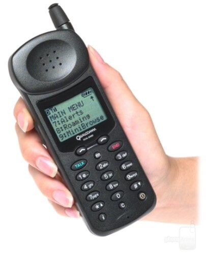
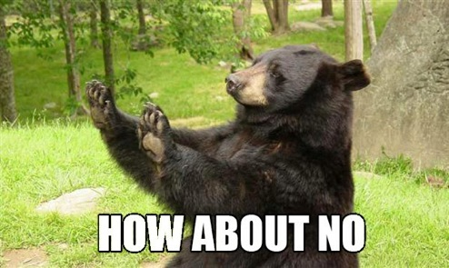
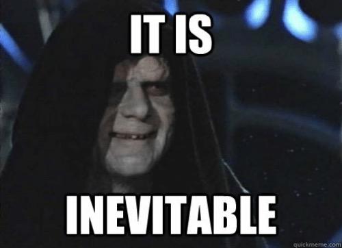
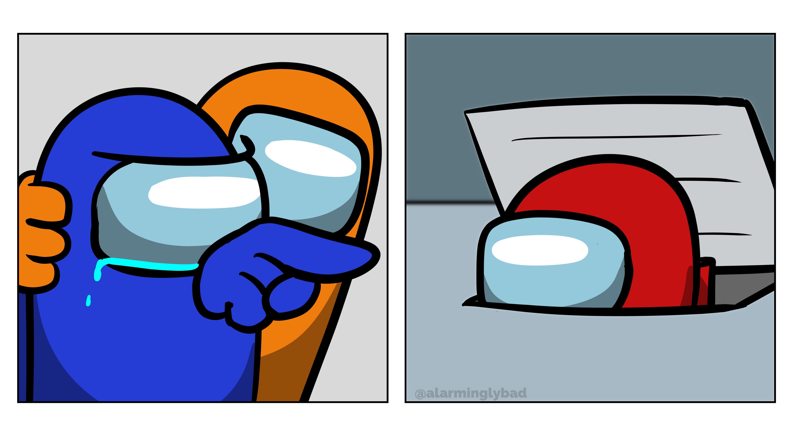
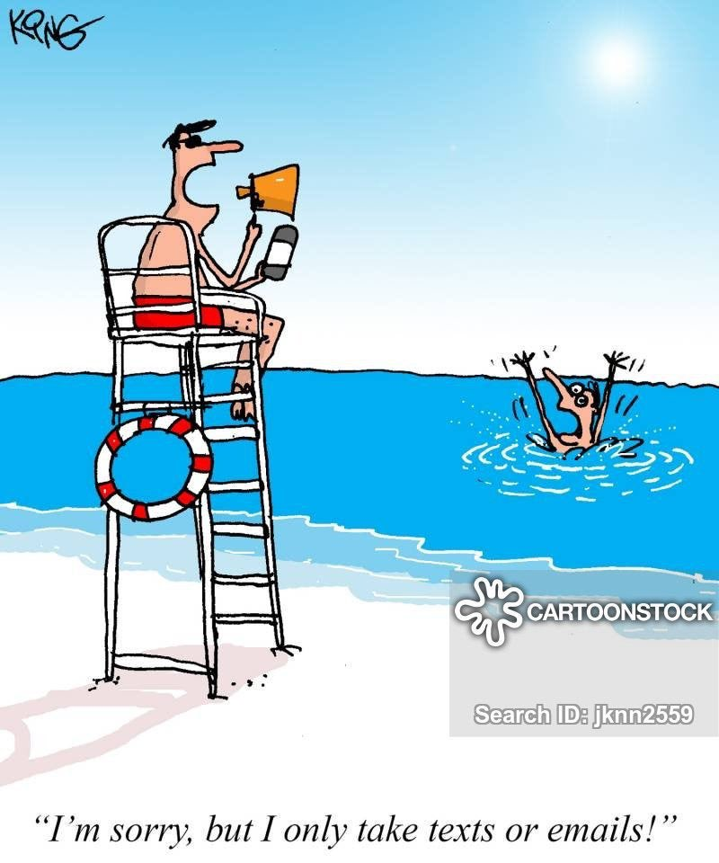
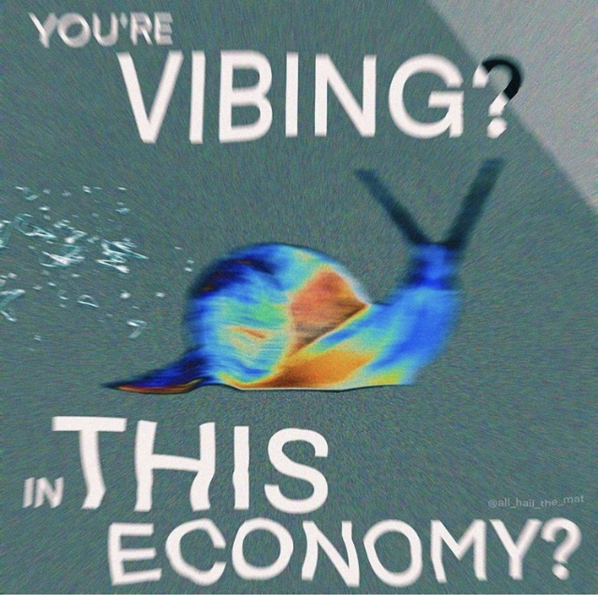

100 question multiple choice exam
You may create a 3 inch by 5 inch handwritten note card to bring to the exam. You’ll also get a copy of the official IPA chart and our phrase structure rules.
Card Rules, exam tips and policies are at http://savethevowels.org/exam
If you need special accommodations for the exam, book a time with the Triton Testing Center now!
It touches on ideas of language ideology, language acceptance, language change, and language attitudes
Inspired by yet another old person complaining about some form of linguistic expression being ‘bad language’
If I had to sum it all up…
Texting is actual language
Keysmashing is actual language
Memes are actual language
Code Switching is actual language
Sign Language is actual language
Bilingualism is never harmful
Emojis
Chat services
Computers
Typewriters
The Printing Press
… and even…
And so it is that you by reason of your tender regard for the writing that is your offspring have declared the very opposite of its true effect. If men learn this, it will implant forgetfulness in their souls. They will cease to exercise memory because they rely on that which is written, calling things to remembrance no longer from within themselves, but by means of external marks.

It just has a different grammar
… and speakers are sensitive to that!
“k”
“ok”
“O.K.”
“no problem”
“No problem.”
“Thank you for letting me know.”
Huh, those intuitions are worth of study!
0123456789 abcdefghijklmnopqrstuvwxyz ABCDEFGHIJKLMNOPQRSTUVWXYZ !“#$%&’( )*+,-./:;<=>?@[ \ ]^_`{ | }~

Also known as ‘the Arabic Chat Alphabet’
Emergent systems which used combinations of ASCII characters to encode Arabic sentences
Different regions used different versions
| Arabic | Arabizi | TUNIZI |
|---|---|---|
| ح | 7 | 7 |
| خ | 5 or 7’ | 5 or kh |
| ذ | d’ or dh | dh |
| ش | $ or sh | ch |
| ث | t’ or th or 4 | th |
| غ | 4’ | gh or 8 |
| ع | 3 | 3 |
| ق | 8 | 9 |
Chna7welek
“how are you”
(Tunisian Arabizi)
el gaw 3amel eh elnaharda f eskendereya?
“How is the weather today in Alexandria?”
(Egyptian Arabizi)
Arguments from conservative ideologies against it
Dislike of moving away from the standard literary language and language of the Quran
Arguments against Westernization of the language
Youth didn’t care at all, and used it anyways
Used online and offline
Continues to be in use despite ‘software keyboards’ being more straightforward
The extant writing system could not work with emerging technology
This could have ‘pushed people to a different language’
… but nope, people just adjusted how they used language and moved on
Wow, that would be fascinating to study!
Special thanks to Allison Park, an undergraduate honors thesis writer here at UCSD on whose work this section is based
This was the topic of Allison’s 2021 LSA Poster “hsdgkhsdjnf: On the Linguistic Nature of Keysmashes”
Involves a chaotic ‘smash’ of multiple keys on a standard keyboard
Often associated with LGBTQ+ identities, as well as younger folks
EALW;IFDJKSLA
erdtfyguyh
shdsjhfdkhsdjh
ksksksksksksks
ssdiulfsodylfkjsdghsjkafhdjsklgsalfdshnfuslhjkl
SCL,JZF.S
sdfsdfsjfs
KSNCKWNDOWNFONELDNFOENR
Allison examined eight major constraints which, if violated, make keysmashes ‘wrong’
Presented a survey with 48 keysmashes which violated these constraints to 1039 people
The presence of punctuation
The length of the keysmash
The number of vowels
The set of keys used (e.g. homerow vs. others)
The presence of words or word-like sequences
Allison did amazing work here
You can write an honors thesis too!
Any linguistics student can start the process in their fourth quarter before graduation!
Just think of a topic and bring it to a faculty member
Socially meaningful
Used in conversational discourse
… and has phonotactics
Boy, that sure looks like language
Even the Linguistic Society of America believed it to be worthy of linguistic study!

They express meaning
They show both iconic and arbitrary meanings
They’re transmitted through culture and show social identity
They show hierarchical and morphological structure


Memes are often strongly iconic
Relying on facial expressions
Photos of situations
The meaning of ‘templates’ is based on their image
Meanings are often grounded in specific cultural contexts
Memes can become more abstract and less iconic over time!





|  |


Memes are culturally and socially specific
Memes spread within subcultures before reaching ‘mainstream’
We can tell facts about people from their meme choices
Some memes need in-group knowledge to be understood








Different elements of the meme carry different meanings
They can be added or subtracted
The meaning of memes is compositional


Phonology/Phonotactics
Morphology
What are the correspondences between meme form and meaning?
How do memes go from funny pictures to productive chunks of meaning and form?
Semantics
Pragmatics
Sociolinguistics
What does meme use tell us about people’s social life?
How are memes used to index social identity?
Conversation and Discourse Analysis
Translation theory
Can a meme be translated effectively into another language or culture?
Can memes be made into text?
Diachronic Linguistics
How do memes change over time?
Do memes follow the same patterns as language?
They’re worthy of a whole class!
LIGN 42 ‘Linguistics of the Internet’

A linguistic term for mixing two or more language varieties within the same conversation
Piccinini 2015 finds that the phonetics of English/Spanish code switching utterances are phonetically unique
These utterances have phonetic properties of both English and Spanish.
Words are more English-like as they’re further from the ‘code switch point’
Language varieties aren’t identical, so you might choose the best one for the meaning you want
Code switching shows identity and affiliation, and does social work
Code switching allows speakers to use a more prestigious or expected dialect
Code switching can be a defense against linguistic discrimination and profiling
Linguistic profiling involves the classification of people into categories and groups based on elements of their language and dialect
Profiling can often have negative consequences for the folks being profiled
What happens when people communicate unconstrained by the bounds of any one language?
It’s interesting that grammars blend, but even more interesting how they do.
This is worthy of Linguistic research!
Signed languages have phonetics, phonology, morphology, syntax, semantics, and pragmatics
The kinds of linguistic analysis done for signed language is not particularly different outside of phonetics and phonology
Our department is a very strong center of signed language study, so this is a great place to learn more.
Because signed language merits serious linguistic study!
Children can learn signed languages at the same time they learn spoken languages
There are no ‘cognitive harms’ done by children learning multiple languages, spoken or signed.
Teaching signed language can improve outcomes for Deaf children who later want to learn spoken languages
There is no harm in teaching signed languages to children, and there’s massive harm from withholding language from children!
If a child has little exposure to signed language while ‘waiting to be able to speak and hear’, they’re being language deprived.
Kids may miss the critical period for language acquisition
This could leave the child struggling to be fluent in any language, signed or spoken
Teaching and using signed language with Deaf children is important, and lack of language does harm!
There’s no harm in children learning to sign
In some cases, there’s serious harm from children not having language during critical ages
This is argument isn’t just used against signed languages…
People discourage bilingualism over and over again in the US
People learn multiple languages in most places around the world and turn out fine
This argument would be laughed out of schools in most places around the world
Delegitimizing forms of language that you don’t understand is not OK
Trying to prevent language change is both dumb and futile
… and just because a linguistic phenomenon is not happening in your social circle doesn’t mean it’s not real
Keep an open mind, as linguistic phenomena might surprise you!
Texting is actual language, damnit
Keysmashing is actual language, damnit
Memes are actual language, damnit
Code Switching is actual language, damnit
Sign Language is actual language, damnit
Bilingualism is not harmful to learning languages